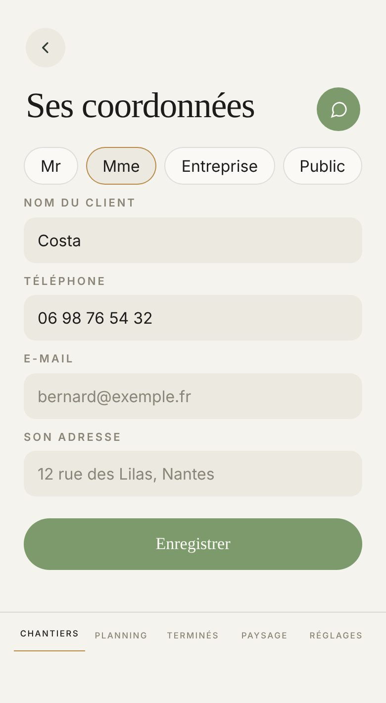

Proposé
Aujourd'hui

L'écran d'aujourd'hui, ouvert par « Modifier ses coordonnées ».
Ce qui change
- L'écran prend la mise en page de la Fiche client : le titre au milieu, le nom et le téléphone côte à côte, le téléphone calé à droite. Aujourd'hui chaque case est seule sur sa ligne et l'écran défile.
- Entreprise : SIRET et n° TVA côte à côte, comme sur la Fiche client. Aujourd'hui ils sont l'un sous l'autre, en pleine largeur.
- Public : SIRET et code service côte à côte, de la même façon ; l'exemple du code devient « Sur la commande », celui de la Fiche client, qui tient dans sa case.
- Le SIRET prend un peu plus de place que son voisin : sur la Fiche client, son exemple est coupé (« 812 345 678 0002 »), il manque un chiffre.
- Sous Enregistrer, les photos de la Fiche client, sans le vocal (votre consigne du 1er novembre) : le « + » et ses photos. Une photo ajoutée ici va sur son dernier chantier ; un client sans chantier n'a pas de « + ».
- Proposé, en pointillés : dès que les 14 chiffres du SIRET sont tapés et que le n° TVA est vide, Atlas le calcule et propose « Le mettre ». Il ne le met jamais seul, une entreprise sans TVA n'en a pas.
Ce qui ne bouge pas
- La Fiche client elle-même : on n'y touche pas.
- Les quatre pastilles, chaque case et son exemple, le rond de l'assistant, Enregistrer en bas, qui ramène à sa fiche.
- L'avis rouge quand le n° TVA ne va pas avec le SIRET, et son bouton « Mettre ».
- Revenir à Mr ou Mme cache les numéros sans rien effacer.
À trancher
- Le n° TVA tiré du SIRET, proposé d'un appui : oui ou non. S'il dit oui, la Fiche client du devis peut le proposer de la même façon.